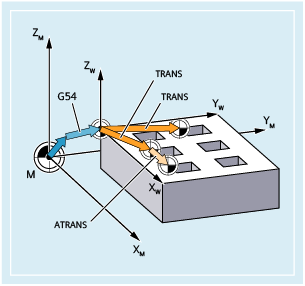
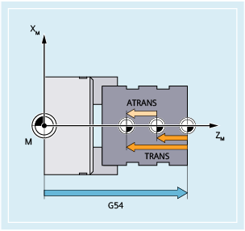
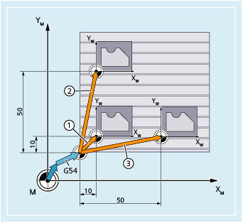
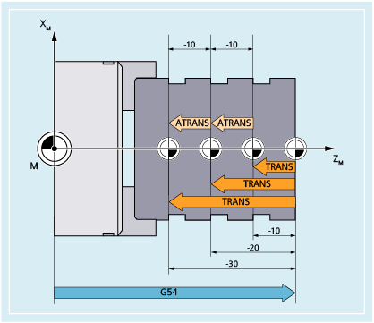

Die ersetzende Frame-Anweisung TRANS verschiebt den Nullpunkt des aktuellen mit G54 ... G57, G505 ... G599 eingestellten Werkstückkoordinatensystems (Einstellbares Nullpunktsystem, ENS) absolut. Die Frame-Anweisung ATRANS verschiebt den Nullpunkt des zuletzt programmierten bzw. aktuell eingestellten Werkstückkoordinatensystems additiv.
|  Programmierbare Nullpunktverschiebung beim Fräsen |  Programmierbare Nullpunktverschiebung beim Drehen |
| Absolute Verschiebung des Werkstücknullpunkts | |
Bezugspunkt: | Nullpunkt des aktuellen mit G54 ... G57, G505 ... G599 eingestellten Werkstückkoordinatensystems (ENS) | |
Alleine im Satz: | Ja | |
| Additive Verschiebung des Werkstücknullpunkts | |
Bezugspunkt: | Nullpunkt des aktuell eingestellten oder über eine Frame-Anweisung zuletzt programmierten Werkstückkoordinatensystems | |
Alleine im Satz: | Ja | |
| Verschiebungswerte in Richtung der angegebenen Geometrieachsen (Bahn-, Synchron- und Positionierachsen) Beispielhaft soll folgende Festlegung gelten:
| |
| Achtung |
Absolute Frame-Anweisungen löschen alle programmierten FramesSoll ein programmierbarer Frame auf bestehenden Frames aufbauen, ist statt der absoluten die additive Frame-Anweisung zu programmieren. |
Im folgenden Fräsbearbeitungsbeispiel werden mit einem NC-Programm aus drei aufgespannten Rohteilen drei identische Werkstücke gefertigt. Die Bearbeitungsfolge zur Werkstückfertigung ist in einem Unterprogramm abgelegt. Durch programmierbare absolute Nullpunktverschiebungen (TRANS) werden die jeweils benötigten Werkstücknullpunkte gesetzt und dann das Unterprogramm aufgerufen.
① | Erste programmierbare absolute Nullpunktverschiebung (→ Satz N50) |
② | Zweite programmierbare absolute Nullpunktverschiebung (→ Satz N70) |
③ | Dritte programmierbare absolute Nullpunktverschiebung (→ Satz N90) |
| Programmcode | Kommentar |
|---|---|
| ... | |
| N30 G17 G54 | ; Arbeitsebene X/Y, Werkstücknullpunkt |
| N40 G0 X0 Z2 | ; Startpunkt anfahren |
| N50 TRANS X10 Y10 | ; Absolute Verschiebung |
| N60 L10 | ; Unterprogramm-Aufruf |
| N70 TRANS X50 Y10 | ; Absolute Verschiebung |
| N80 L10 | ; Unterprogramm-Aufruf |
| N90 TRANS X10 Y50 | ; Absolute Verschiebung |
| N100 L10 | ; Unterprogramm-Aufruf |
| N110 M30 | ; Programmende |
Im folgenden Drehbearbeitungsbeispiel werden mit einem NC-Programm aus dem aufgespannten Rohteil drei identische Werkstücke gefertigt. Die Bearbeitungsfolge zur Werkstückfertigung und dem anschließenden Abstechen ist in einem Unterprogramm abgelegt. Durch programmierbare Nullpunktverschiebungen werden die jeweils benötigten Werkstücknullpunkte gesetzt und dann das Unterprogramm aufgerufen.
| Programmcode | Kommentar |
|---|---|
| ... | |
| N30 G18 G54 | ; Arbeitsebene Z/X, Werkstücknullpunkt |
| N40 G0 X0 Y0 Z2 | ; Startpunkt anfahren |
| N50 TRANS X0 Z-10 | ; Absolute Verschiebung |
| N60 L20 | ; Unterprogramm-Aufruf |
| N70 TRANS X0 Z-20 (oder ATRANS Z-10) | ; Absolute Verschiebung |
| N80 L20 | ; Unterprogramm-Aufruf |
| N90 TRANS X0 Z-30 (oder ATRANS Z-10) | ; Absolute Verschiebung |
| N100 L20 | ; Unterprogramm-Aufruf |
| N110 M30 | ; Programmende |
Siehe auch:
Programmierbare Nullpunktverschiebung (G58, G59)
Programmierbare Frames (Übersicht)